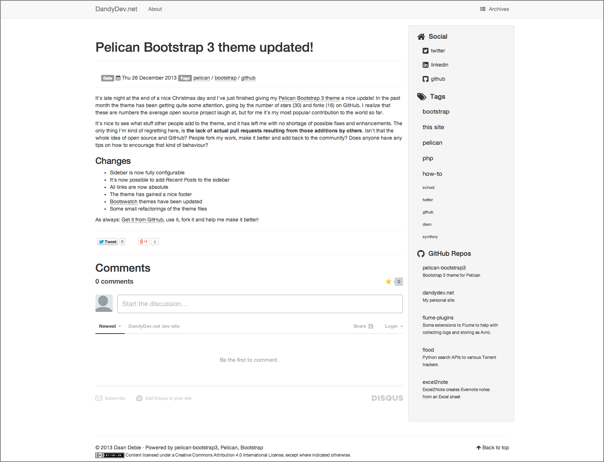

Pelican on Github Pages構築後のカスタマイズについて
はじめに
Pelican導入後にこの5つをやったので備忘のためにも整理する
-
pelican-bootstrap3の設定
-
Google Analyticsの導入
-
サイトのfaviconを設定
-
pelicanconf.pyのカスタマイズ
-
検索エンジン対策
1. pelican-bootstrap3を設定する
pelican-bootstrap3はこういうデザインのテーマ。

pelicanのオフィシャルのthemesを全てcloneする
git clone --recursive https://github.com/getpelican/pelican-themes ~/pelican-themes
pelicanconf.pyのTHEME変数を修正する。
THEME = 'pelican-themes\\pelican-bootstrap3'
pelican-bootstrap3の場合は下記設定も必須。他のthemeの場合は不要だった。
JINJA_ENVIRONMENT = {
'extensions': ['jinja2.ext.i18n'],
}
2.Google Analyticsの導入
Goole Analytics側の設定方法自体はググればたくさんあると思うので割愛。
PelicanのGoole Analyticsの導入は非常に簡単。公開用の設定ファイルであるpublishconf.pyにGoogle Analytics用の変数があるためにそこに「UA-XXXXXX」を設定すれば完了。
GOOGLE_ANALYTICS = "UA-********-*"
GOOGLE_ANALYTICS_SITEID = "auto"
3.faviconの設定
pelican-bootstrap3を使っている場合は、事前にfaviconとするicoファイルを配置した上で設定ファイル（pelicanconf.py）に下記のように設定するだけで良い。
# for favicon setting
FAVICON = 'images/favicon.ico'
themeに依存していることが多いと思うので、上記以外の場合はこの辺の記事が参考になると思われる。
Tips n Tricks · getpelican/pelican Wiki https://github.com/getpelican/pelican/wiki/Tips-n-Tricks
[Python]Pelicanで作ったサイトにfaviconを設定する - dackdive’s blog https://dackdive.hateblo.jp/entry/2016/01/12/101200
4.pelicanconf.pyのカスタマイズ
pelican-bootstrap3向けのカスタマイズ
pelican-bootstrap3のthemesに依存するのでこのテーマ以外は動作しないはず。
参考URL→ https://github.com/getpelican/pelican-themes/tree/master/pelican-bootstrap3
# customize for pelican-bootstrap3 2019.11.17
# 記事にカテゴリを追加するか
SHOW_ARTICLE_CATEGORY=True
# breadcrumbs パンくずリストを表示するかどうか
DISPLAY_BREADCRUMBS=True
DISPLAY_CATEGORY_IN_BREADCRUMBS=True
# 記事一覧に Date や Category、 Tagsを表示させるかどうか
DISPLAY_ARTICLE_INFO_ON_INDEX=True
# バナー画像に関するカスタマイズ
#BANNER = 'images/banner.jpg'
#BANNER_ALL_PAGES = True
# カテゴリ
DISPLAY_CATEGORIES_ON_SIDEBAR=True
# タグ
DISPLAY_TAGS_ON_SIDEBAR=True
# 最近の投稿の表示（デフォルト5つの記事を表示）
DISPLAY_RECENT_POSTS_ON_SIDEBAR=True
その他全体の設定変更
#cjk_spacing:Markdown ドキュメント中の中国語/日本語/韓国語と英単語との間にスペースを挿入
#markdown_cjk_spacing/README-ja.md at master · EloiseSeverin/markdown_cjk_spacing https://github.com/EloiseSeverin/markdown_cjk_spacing/blob/master/README-ja.md
MARKDOWN = {
'extension_configs': {
'markdown.extensions.codehilite': {'css_class': 'highlight'},
'markdown.extensions.extra': {},
'markdown.extensions.meta': {},
'markdown.extensions.nl2br': {},
'markdown_cjk_spacing.cjk_spacing': {},
},
'output_format': 'html5',
}
# add for date format 2019.11.17
DATE_FORMATS = {
'en': '%a, %d %b %Y',
'ja': '%Y-%m-%d(%a)',
}
DEFAULT_LANG = 'Ja'
# Feed generation is usually not desired when developing
FEED_ALL_ATOM = None
CATEGORY_FEED_ATOM = None
TRANSLATION_FEED_ATOM = None
AUTHOR_FEED_ATOM = None
AUTHOR_FEED_RSS = None
DEFAULT_PAGINATION = 5
# Uncomment following line if you want document-relative URLs when developing
#RELATIVE_URLS = True
5.検索エンジン対策
はてなブログと違ってGithub PagesはCEOは期待できないので 自分の公開したいURLないしはドメインをエンジン側に申請する。GoogleとBingに今回作ったURLを登録する。こちらのURLから出来る。